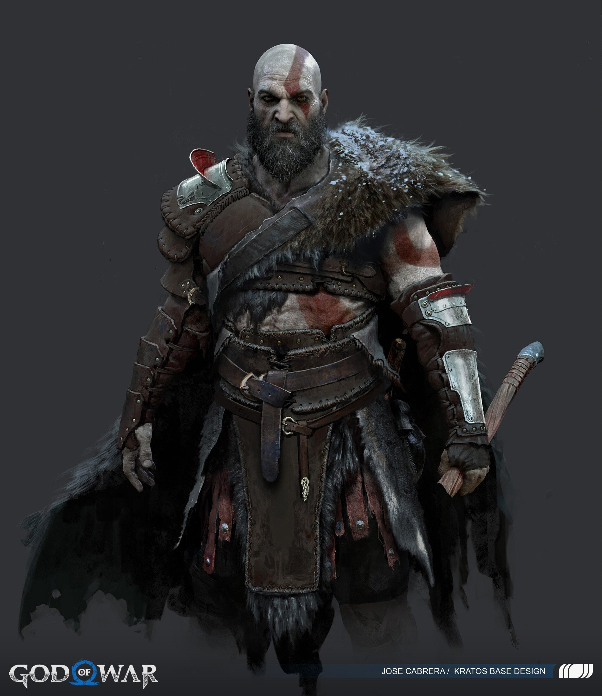

Welcome to my page!!!
"¡Hola! Mi nombre es Krysthopher Ruiz y estoy emocionado de presentarme como posible candidato para tu próximo proyecto de desarrollo front-end. Con 25 años de edad, me encuentro en una transición de carrera hacia el campo tecnológico y busco cada día mejorar mis habilidades. Mi objetivo a largo plazo es obtener un título en ciencias de la computación, ya que creo firmemente que el cielo ya no es el límite en este campo en constante evolución. ¡Gracias por visitar mi portafolio!"
